7: Random Effect Structures
This reading:
- Extending the multilevel model to encompass more complex grouping structures
- Groups nested inside higher level groups
- Non-nested group structures
“random effects”
So far, we’ve fitted various multilevel models that have had grouping structures such as:
- each observation is a child, and children are grouped into schools
- each observation is an individual trial or assessment, and multiple observations come from each participants
- each observation is a single timepoint, and we have multiple timepoints for each participant
In all of these, we have been specifying models with a random effect structure that takes the form (.... | g).
We’re now going to move to look at how multilevel modelling can capture more complex structures - when there is more than just the one grouping variable.
a small note on how people use the term “random effects”
People often use the term “random effects” to collectively refer to all of the stuff we’re putting in the brakects of lmer():
\[ \text{... + }\underbrace{\text{(random intercept + random slopes | grouping structure)}}_{\text{random effects}} \]
People will use different phrases to refer to individual random intercepts or slopes, such as:
- “random effects of x by g” to refer to
... + x | g) - “by-g random effects of x” to refer to
... + x | g) - “random effects of x for g” to refer to
... + x | g) - “random effect for/of g” to refer to
(1 | g)
These are all really trying to just different ways to say that a model allows [insert-parameter-here] to be different for each group of g, and that it estimates their variance.
Nested
The same principle we have seen for models with 2 levels can be extended to situations in which those level 2 clusters are themselves grouped in to higher level clusters.
For instance:
- each observation is a child, and children are grouped into schools. Schools are nested within districts.
- each observation is an individual assessment, and we have multiple assessments for each patient, and patients are nested within hospitals.
- each observation is an individual timepoint, and we have multiple timepoint per child. children are nested within schools
This sort of structure is referred to as “nested” in that at each level, individual units belong to only one of the higher up units. For instance, in a “observations within children within schools” structure, each observation belongs to only one child, and each child is at only one school. You can see this idea in Figure 1
In R, we can specify a nested structure using either of:
... + (1 + ... | school) + (1 + .... | school:child)
... + (1 + ... | school) + (1 + .... | child:school)This specifies that things can vary between schools and that things can also vary between the children within the schools. Note that when we use the colon : the order doesn’t matter - it just means “the combination of school and child variables”, so whether we group observations from child 1 in school A as “A.1” or “1.A” doesn’t matter - it gets at the same group:
So (1 | school) + (1 | school:child) means that the intercept varies by school (some schools have a higher \(y\), some have lower), and also by the children within the schools (some children have a higher \(y\) for the school, some have lower).
You might think of this as the variance in school intercepts (width of purple distribution in Figure 2) and the variance in child intercepts around their school average (width of the right-hand distributions in Figure 2). In Figure 2 below there is a lot of school-level variation, and less child-level variation, but you could just as likely have a situation in which children that vary a lot and schools vary less.
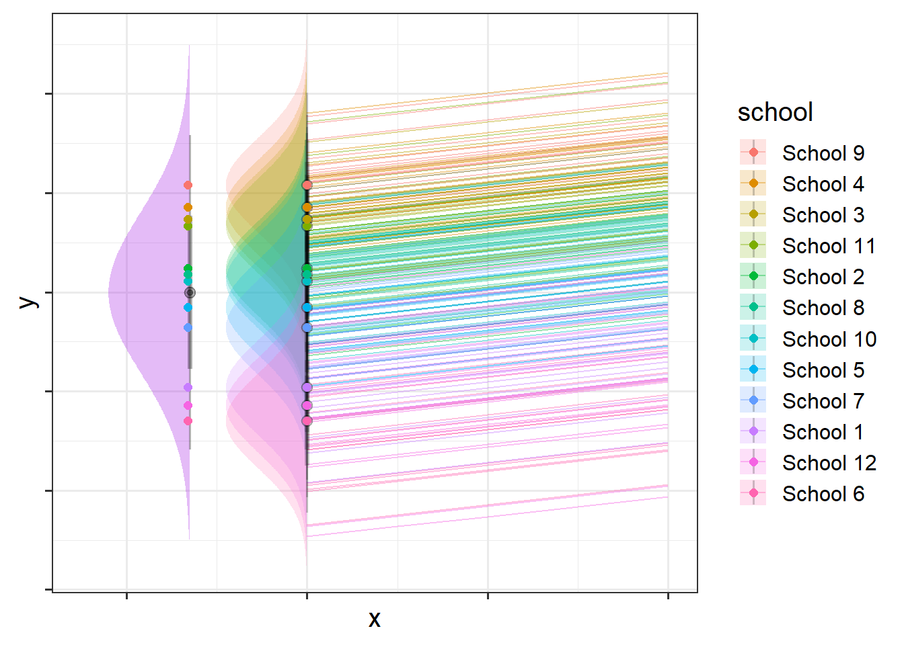
a shortcut
In lme4, there is a shortcut for writing nested random effects that uses the / to specify higher/lower level of nesting.
For instance,
(1 + .... | school/child)
is the same thing as
(1 + ... | school) + (1 + .... | school:child)
This shortcut has a bit of a disadvantage in that it means all the same random slopes are fitted for schools and for children-within-schools, so often it is preferable to keep them separated out.
uniqueness of labels
If labels of children are unique to each school, e.g. the child variable has values like “school1_child1”, “school2_child2” etc., then school:child captures the same set of groups as child does, and therefore
(1 + ... | school) + (1 + .... | school:child)
is the same as
(1 + ... | school) + (1 + .... | child)
The risk of just specifying ... |child is that whether or not it gets at the correct groups depends on your labels.
in the summary() output of a multilevel model, immediately beneath the random effects it will show you how many groups. It’s always worth checking that these match with how many you would expect!
Crossed
Crossed structures are, in simplest terms, anything that is not nested. So if a unit of observation exists in more than one of another level, we have a crossed design - i.e. where there is not the same hierarchy to the structure.
For instance:
- Each observation is an assessment of a patient by a therapist. Patients see various therapists, and therapists see many different patients (patients and therapists are not nested)
- Each observation is an individual trial, which will be one from a set of experimental items. All participants see all items, and “item 1” for participant 1 is the same “item 1” as when we see it for participant 2, and 3, and so on.. So items are not nested within participants.
This sort of structure is referred to as “crossed” because of the lines crossing in such diagrams as in Figure 3. In Figure 3, observations can be grouped into tasks, but they can also be grouped into participants.
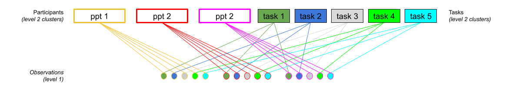
In R, we simply specify these as separate groupings
... + (1 + ... | participant) + (1 + .... | task)This specifies that things can vary between participants, and that things can also vary between tasks.
So (1 | participant) + (1 | task) means that the intercept varies by participant (some people have a higher \(y\), some have lower),b and also by tasks (some tasks result in a higher \(y\), some lower).
It’s a bit more difficult to visualise, but Figure 4 shows two independent distributions representing the intercept variance between Participants (left) and between Tasks (right).
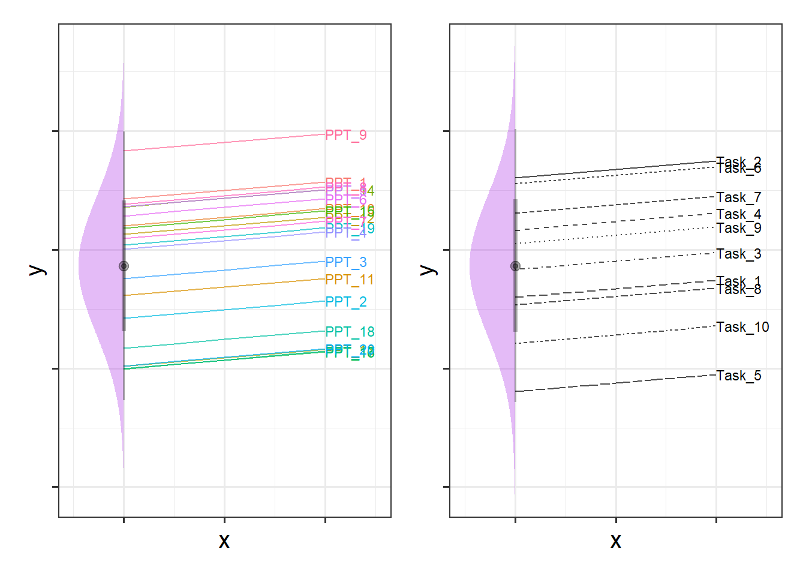
We can see in Figure 4, for instance, that “PPT_9” tends to have a higher \(y\), and that “Task_5” tends to have lower scores etc. Combined, these imply our model fitted values as shown for just 4 of the participants in Figure 5.
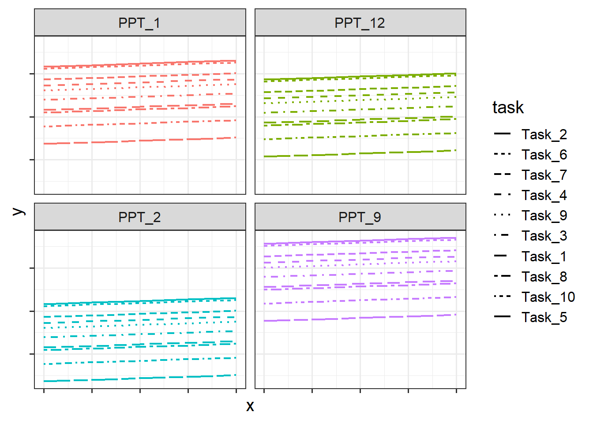
Examples
Example 1: Two levels
Below is an example of a study that has a similar structure to those that we’ve seen thus far, in which we have just two levels (observations that are grouped in some way).
Study Design
Suppose, for instance, that we conducted an experiment on a sample of 20 staff members from the Psychology department to investigate effects of CBD consumption on stress over the course of the working week. Participants were randomly allocated to one of two conditions: the control group continued as normal, and the CBD group were given one CBD drink every day. Over the course of the working week (5 days) participants stress levels were measured using a self-report questionnaire.
We can see our data here:
psychstress <- read_csv("https://uoepsy.github.io/data/stressweek1.csv")
head(psychstress)# A tibble: 6 × 6
dept pid CBD measure day stress
<chr> <chr> <chr> <chr> <dbl> <dbl>
1 Psych Holly N Self-report 1 -0.417
2 Psych Holly N Self-report 2 0.924
3 Psych Holly N Self-report 3 0.634
4 Psych Holly N Self-report 4 1.21
5 Psych Holly N Self-report 5 0.506
6 Psych Tom Y Self-report 1 -0.557Plot
Code
# take the dataset, and make the x axis of our plot the 'day' variable,
# and the y axis the 'stress' variable:
# color everything by the CBD groups
ggplot(psychstress, aes(x = day, y = stress, col=CBD)) +
geom_point() + # add points to the plot
geom_line() + # add lines to the plot
facet_wrap(~pid) # split it by participant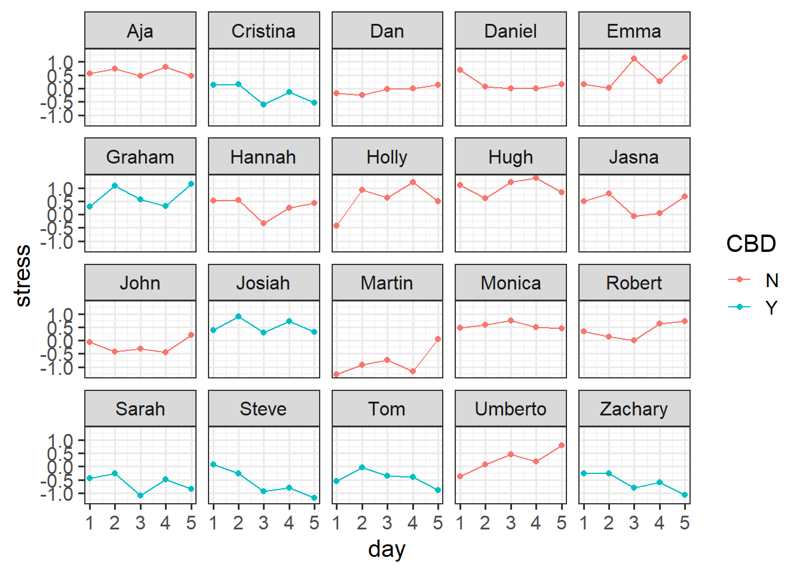
Model
We might fit a model that looks something like this:
Code
library(lme4)
# re-center 'day' so the intercept is day 1
psychstress$day <- psychstress$day-1
# fit a model of stress over time: stress~day
# estimate differences between the groups in their stress change: day*CBD
# people vary in their overall stress levels: 1|pid
# people vary in their how stress changes over the week: day|pid
m2level <- lmer(stress ~ 1 + day * CBD +
(1 + day | pid), data = psychstress)Note that there is a line in the model summary output just below the random effects that shows us the information about the groups, telling us that we have 100 observations that are grouped into 20 different participants’.
summary(m2level)Linear mixed model fit by REML ['lmerMod']
Formula: stress ~ 1 + day * CBD + (1 + day | pid)
Data: psychstress
REML criterion at convergence: 127.7
Scaled residuals:
Min 1Q Median 3Q Max
-2.17535 -0.65204 -0.02667 0.64622 1.81574
Random effects:
Groups Name Variance Std.Dev. Corr
pid (Intercept) 0.199441 0.44659
day 0.004328 0.06579 0.02
Residual 0.112462 0.33535
Number of obs: 100, groups: pid, 20
Fixed effects:
Estimate Std. Error t value
(Intercept) 0.13178 0.14329 0.920
day 0.07567 0.03461 2.186
CBDY -0.08516 0.24221 -0.352
day:CBDY -0.19128 0.05851 -3.270
Correlation of Fixed Effects:
(Intr) day CBDY
day -0.339
CBDY -0.592 0.201
day:CBDY 0.201 -0.592 -0.339Example 2: Three level Nested
Let’s suppose that instead of simply sampling 20 staff members from the Psychology department, we instead went out and sampled lots of people from different departments across the University. The dataset below contains not just our 20 Psychology staff members, but also data from 220 other people from departments such as History, Philosophy, Art, etc..
neststress <- read_csv("https://uoepsy.github.io/data/stressweek_nested.csv")
head(neststress)# A tibble: 6 × 6
dept pid CBD measure day stress
<chr> <chr> <chr> <chr> <dbl> <dbl>
1 CMVM Ryan Y Self-report 1 0.933
2 CMVM Ryan Y Self-report 2 0.997
3 CMVM Ryan Y Self-report 3 0.408
4 CMVM Ryan Y Self-report 4 0.581
5 CMVM Ryan Y Self-report 5 0.442
6 CMVM Nicholas Y Self-report 1 0.138In this case, we have observations that are grouped by participants, and those participants can be grouped into the department in which they work. Three levels of nesting!
You can see in the Figure 6 below that there is variation between departments (i.e. people working in Art are a bit more relaxed, Political Science and CMVM is stressful, etc), and then within each of those, there is variation between participants (i.e. some people working in Art are more stressed than other people in Art).
Code
ggplot(neststress, aes(x=day, y=stress,col=CBD))+
# plot points
geom_point()+
# split by departments
facet_wrap(~dept)+
# make a line for each participant
geom_line(aes(group=pid),alpha=.3)+
# plot the mean and SE for each day.
stat_summary(geom="pointrange",col="black")
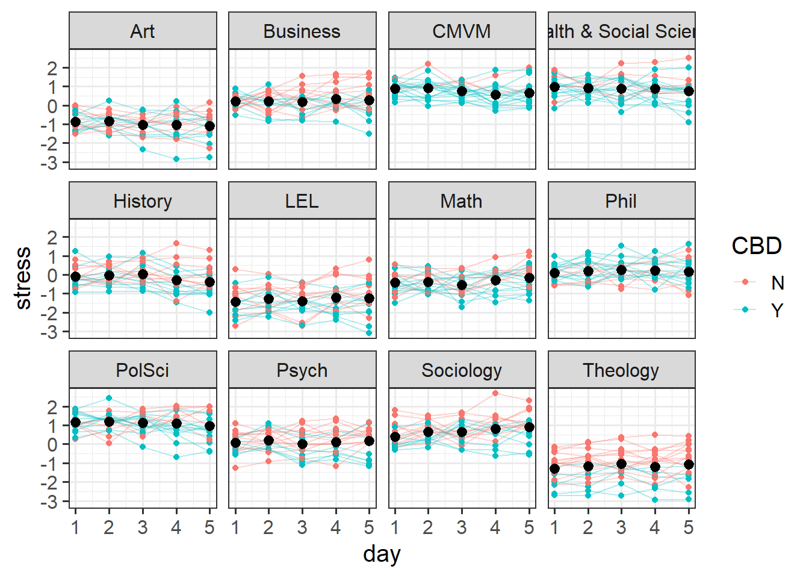
To account for these multiple sources of variation, we can fit a model that says both ( ... | dept) (“things vary by department”) and ( ... | dept:pid) (“things vary by participants within departments”).
So a model might look something like this:
# re-center 'day' so the intercept is day 1
neststress$day <- neststress$day-1
mnest <- lmer(stress ~ 1 + day * CBD +
(1 + day * CBD | dept) +
(1 + day | dept:pid), data = neststress)Note that we can have different random slopes for departments vs those for participants. Our model above includes all random slopes that are feasible given the study design.
explanations of each random slope
- participants can vary in their baseline stress levels.
(1 | dept:pid)
- participants can vary in how stress changes over the week. e.g., some participants might get more stressed over the week, some might get less stressed
(days | dept:pid)
- participants cannot vary in how CBD changes their stress level. because each participant is either CBD or control, “the effect of CBD on stress” doesn’t exist for a single participant (and so can’t very between participants)
(CBD | dept:pid)
- participants cannot vary in how CBD affects their changes in stress over the week. For the same reason as above.
( day*CBD | dept:pid)
- departments can vary in their baseline stress levels.
(1 | dept)
- departments can vary in how stress changes over the week.
(days | dept)
- departments can vary in how CBD changes stress levels. because each department contains some participants in the CBD group and some in the control group, “the effect of CBD on stress” does exist for a given department, and so could vary between departments. e.g. Philosophers taking CBD get really relaxed, but CBD doesn’t affect Mathematicians that much.
(CBD | dept)
- departments can vary in how CBD affects changes in stress over the week
( day*CBD | dept)
Note that the above model is a singular fit, but it gives us a better place to start simplifying from. If we remove the day*CBD interaction in the by-department random effects, we get a model that converges:
mnest2 <- lmer(stress ~ 1 + day * CBD +
(1 + day + CBD | dept) +
(1 + day | dept:pid), data = neststress)And plot our fitted values
Code
library(broom.mixed)
augment(mnest2) |>
ggplot(aes(x=day, y=.fitted, col=CBD))+
# split by departments
facet_wrap(~dept) +
# make a line for each participant
geom_line(aes(group=pid),alpha=.3)+
# average fitted value for CBD vs control:
stat_summary(geom="line",aes(col=CBD),lwd=1)
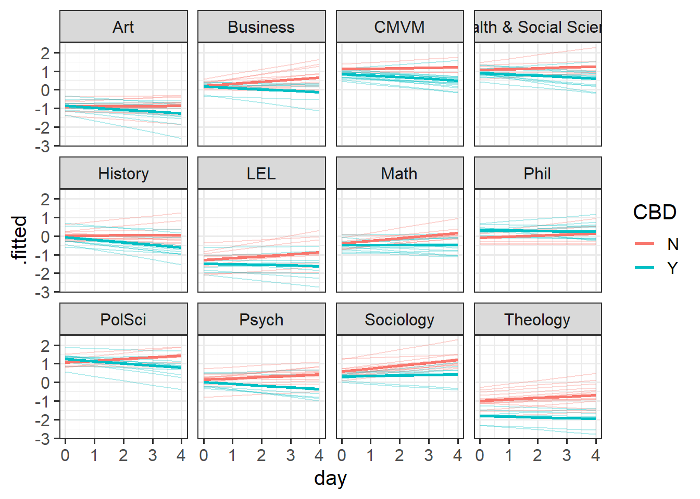
And we can see in our summary that there is a lot of by-department variation - departments vary in their baseline stress levels with a standard deviation of 0.81, and within departments, participants vary in baseline stress scores with a standard deviation of 0.38.
summary(mnest2)...
Random effects:
Groups Name Variance Std.Dev. Corr
dept:pid (Intercept) 0.147661 0.38427
day 0.012142 0.11019 -0.03
dept (Intercept) 0.648410 0.80524
day 0.001979 0.04449 -0.18
CBDY 0.055388 0.23535 0.40 -0.22
Residual 0.129765 0.36023
Number of obs: 1200, groups: dept:pid, 240; dept, 12
...Examining ranef(mnest2) now gives us a list of dept:pid random effects, and then of dept random effects. We can plot them using dotplot.ranef.mer(), as seen below. From these, we can see for instance, that the effect of CBD is more negative for Theology, and Sociology and Maths have higher slopes of day. These map with the plot of fitted values we saw in Figure 7 - the department lines are going up more Math and Sociology than in other departments, and in Theology the blue CBD line is much lower relative to the red control line than in other departments.
dotplot.ranef.mer(ranef(mnest2))$dept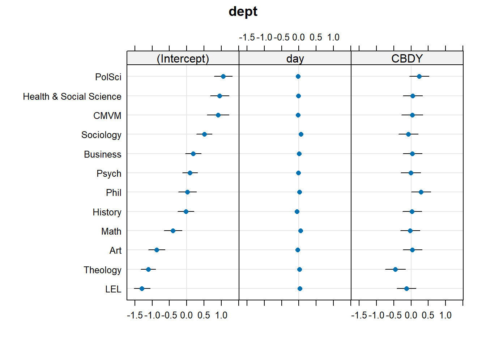
Example 3: Crossed
Forgetting about participants nested in departments, let’s return to our sample of 20 staff members from the Psychology department. In our initial study design, we had just one self report measure of stress each day for each person.
However, we might just as easily have taken more measurements. i.e. on Day 1, we could have recorded Martin’s stress levels 10 times. Furthermore, we could have used 10 different measurements of stress, rather than just a self-report measure. We could measure his cortisol levels, blood pressure, heart rate variability, give him different questionnaires, ask an informant like his son to report his stress, and so on. And we could have done the same for everybody.
stresscross <- read_csv("https://uoepsy.github.io/data/stressweek_crossed.csv")
head(stresscross)# A tibble: 6 × 6
dept pid CBD measure day stress
<chr> <chr> <chr> <chr> <dbl> <dbl>
1 Psych Aja N Alpha-Amylase 1 0.269
2 Psych Aja N Blood Pressure 1 0.855
3 Psych Aja N Cortisol 1 0.278
4 Psych Aja N EEQ 1 0.470
5 Psych Aja N HRV 1 -0.404
6 Psych Aja N Informant 1 0.774In this case, we can group our participants in two different ways. For each participant we have 5 datapoints for each of 10 different measures of stress. So we have 5x10 = 50 observations for each participant. But if we group them by measure instead, then we have each measure 5 times for 20 participants, so 5x20 = 100 observations of each measure. And there is no hierarchy here - the “blood pressure” measure is the same measure for Martin as it is for Dan and Aja etc. It makes sense to think of by-measure variability as not being ‘within-participants’.
This means we can choose when plotting whether to split the plots by participants, with a different line for each measure (Figure 8), or split by measure with a different line for each participant (Figure 9)
facet = participant, line = measure
Code
ggplot(stresscross, aes(x=day, y=stress, col=CBD))+
geom_point()+
#make a line for each measure
geom_line(aes(group=measure))+
facet_wrap(~pid)
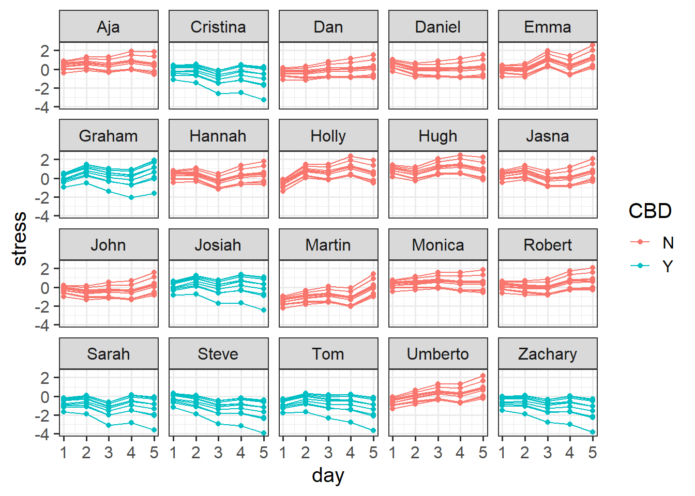
facet = measure, line = participant
Code
ggplot(stresscross, aes(x=day, y=stress, col=CBD))+
geom_point()+
# make a line for each ppt
geom_line(aes(group=pid))+
facet_wrap(~measure)
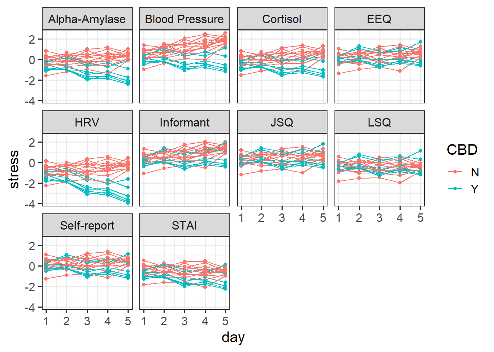
We can fit a model that therefore accounts for the by-participant variation (“things vary between participants”) and the by-measure variation (“things vary between measures”).
So a model might look something like this:
# re-center 'day' so the intercept is day 1
stresscross$day <- stresscross$day-1
mcross <- lmer(stress ~ 1 + day * CBD +
(1 + day * CBD | measure) +
(1 + day | pid), data = stresscross)Note that just as with the nested example above, we can have different random slopes for measures vs those for participants, depending upon what effects can vary given the study design.
As before, removing the interaction in the random effects achieves model convergence:
mcross2 <- lmer(stress ~ 1 + day * CBD +
(1 + day + CBD | measure) +
(1 + day | pid), data = stresscross)And again we might plot our fitted values either of the ways we plotted our initial data in Figure 8 above, only with the .fitted values obtained from the augment() function:
Code
augment(mcross2) |>
ggplot(aes(x=day, y=.fitted, col=CBD))+
geom_point()+
geom_line(aes(group=pid))+
facet_wrap(~measure)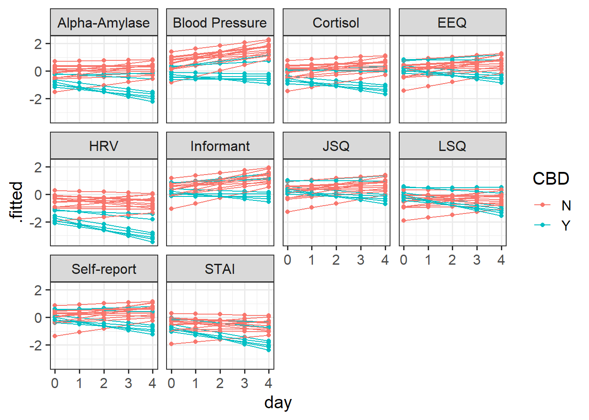
Our random effect variances show the estimated variance in different terms (the intercept, slopes of day, effect of CBD) between participants, and between measures.
From the below it is possible to see, for instance, that there is considerable variability between how measures respond to CBD (they vary in the effect of CBD on stress with a standard deviation of 0.53)
summary(mcross2)...
Random effects:
Groups Name Variance Std.Dev. Corr
pid (Intercept) 0.316578 0.56265
day 0.014693 0.12121 -0.51
measure (Intercept) 0.087111 0.29515
day 0.008542 0.09242 0.88
CBDY 0.283635 0.53257 -0.10 0.11
Residual 0.088073 0.29677
Number of obs: 1000, groups: pid, 20; measure, 10
...Again, our dotplots of random effects help to also show this picture. We can see that the measures of “blood pressure”, “alpha-amylase”, “cortisol”, and “HRV” all have more effects of CBD that are more negative. We can see this in our plot of fitted values - these measures look like CBD vs control differnce is greater than in other measures.
dotplot.ranef.mer(ranef(mcross2))$measure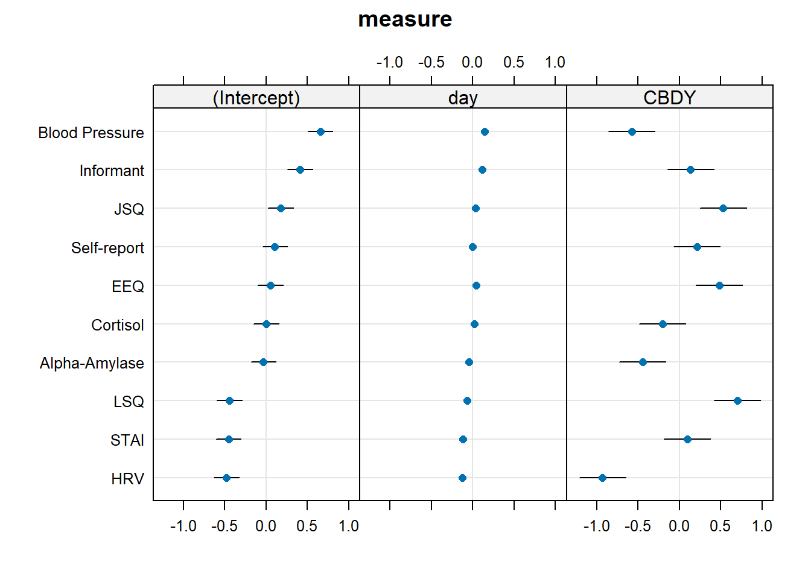